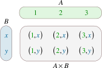

Database Course
Ahmad Yoosofan
University of Kashan
Data or Quantitative data
Quantitative data are
- measures of values or counts and are expressed as numbers.
- data about numeric variables (e.g. how many; how much; or how often).
- measures of 'types' and may be represented by a name, symbol, or a number code.
- data about categorical variables (e.g. what type) abs.gov.au .
Quantitative Data Examples
- I updated my phone 6 times in a quarter.
- My teenager grew by 3 inches last year.
- 83 people downloaded the latest mobile application.
- My aunt lost 18 pounds last year.
- 150 respondents were of the opinion that the new product feature will not be successful.
- There will be 30% increase in revenue with the inclusion of a new product.
- 500 people attended the seminar.
- 54% people prefer shopping online instead of going to the mall.
- She has 10 holidays in this year.
- Product X costs $1000.
Advantages of Quantitative Data
- Conduct in-depth research: Since quantitative data can be statistically analyzed, it is highly likely that the research will be detailed.
- Minimum bias: There are instances in research, where personal bias is involved which leads to incorrect results. Due to the numerical nature of quantitative data, the personal bias is reduced to a great extent.
- Accurate results: As the results obtained are objective in nature, they are extremely accurate.
Models and their Usage
- What is a model?
- Why do we need model?
- A little history of model in mathetamtics
- Real life situations and models
Old models for Storing Data
- Why do we need secondary storage for preserving data?
- Direct Programming with Files (by Old languages like PL/I and Cobol)
- Hierarchical model
- Network model
,, :
Relational Model
- Table
- Field
- Record
Sales DataBase (1)
product_name | stock | quantity | customer_name | ||
|---|---|---|---|---|---|
10 | Sugar | 20 | 2 | 32 | Ali |
11 | Salt | 100 | 5 | 32 | Ali |
11 | Salt | 100 | 6 | 33 | Reza |
10 | Sugar | 20 | 3 | 34 | Karim |
Sales DataBase (2)
product_name | stock | |
|---|---|---|
10 | Sugar | 20 |
11 | Salt | 100 |
Sales DataBase (3)
customer_name | |
|---|---|
32 | Ali |
33 | Reza |
34 | Karim |
Sales DataBase (4)
quantity | ||
|---|---|---|
10 | 32 | 2 |
11 | 32 | 5 |
11 | 33 | 6 |
10 | 34 | 3 |
Sales DataBase (5)
- Product Table: (product_id, product_name, stock)
- Customer Table: ( customer_id, customer_name )
- Sales Table: ( product_id, customer_id , quantity)
Parts, Suppliers and Projects Database
جدول فروش یک فروشگاه
نام جنس | موجودی | میزان فروش | ||
|---|---|---|---|---|
1 | شکر | 1000 | 1 | 12 |
1 | شکر | 1000 | 4 | 14 |
1 | شکر | 1000 | 5 | 5 |
2 | نمک | 1500 | 2 | 10 |
2 | نمک | 1500 | 4 | 20 |
2 | نمک | 1500 | 5 | 30 |
2 | نمک | 1500 | 3 | 40 |
فروشگاه ۲
نام جنس | موجودی | |
|---|---|---|
1 | شکر | 1000 |
2 | نمک | 1500 |
میزان فروش | ||
|---|---|---|
1 | 1 | 12 |
1 | 4 | 14 |
1 | 5 | 5 |
2 | 2 | 10 |
2 | 4 | 20 |
2 | 5 | 30 |
2 | 3 | 40 |
Types
Not exact types
- product_id: positive number
- product_name: string
- stock: positive number
- quantity: positive number
- customer_id: positive number
- customer_name: string


Cartesian Product(I)
A × B = { (a, b) ∣ a ∈ A ∧ b ∈ B}
A={1, 2, 3} and B={x, y}
A × B = {(1, x), (1, y), (2, x), (2, y), (3, x), (3, y)}
B × A = {(x, 1), (x, 2), (x, 3), (y, 1), (y, 2), (y, 3)
A × B ≠ B × A
Set of Tuples (1)
{ ( a11, a12, a13, ... , a1n ) , # Tuple 1 ( a21, a22, a23, ... , a2n ) , # Tuple 2 .... ( am1, am2, am3, ... , amn ) # Tuple m }
- Domain of ({a11, a21, ... , am1}) = S1
- Domain of ({a12, a22, ... , am2}) = S2
- ...
- Domain of ({a1n, a2n, ... , amn}) = Sn
R1 ⊆ S1 * S2 * ... * Sn
- {a11, a21, ... , am1} ⊆ S1
- {a12, a22, ... , am2} ⊆ S2
- ... ⊆ Si
- {a1n, a2n, ... , amn} ⊆ Sn
Set of Tuples (2)
{ { a11 : Label_1 , a12 : Label_2 , a13 : Label_3 , ... , a1n : Label_n } , # Tuple 1 { a21 : Label_1 , a22 : Label_2 , a23 : Label_3 , ... , a2n : Label_n } , # Tuple 2 .... { am1 : Label_1 , am2 : Label_2 , am3 : Label_3 , ... , amn : Label_n } , # Tuple m }
Set of Tuples (3)
{ { a21 : Label_1 , a22 : Label_2 , a23 : Label_3 , ... , a2n : Label_n } , # Tuple 2 { a11 : Label_1 , a12 : Label_2 , a13 : Label_3 , ... , a1n : Label_n } , # Tuple 1 .... { am1n : Label_1 , am2n : Label_2 , am3n : Label_3 , ... , amn : Label_n } , # Tuple m }
Set of Tuples (4)
{ { a21 : Label_1 , a22 : Label_2 , a23 : Label_3 , ... , a2n : Label_n } , # Tuple 2 { a12 : Label_2 , a13 : Label_3 , a11 : Label_1 , ... , a1n : Label_n } , # Tuple 1 .... { am1 : Label_1 , am2 : Label_2 , am3 : Label_3 , ... , amn : Label_n } , # Tuple m }
Relational Algebra
http://yoosofan.github.io/webrel/index.html
http://yoosofan.github.io/webrel/help/help.html
- Schema
- Table Schema
- Database Schema
p; ------ s minus s ; ------ RELATION { TUPLE{ PN PN("s4"), SNAME SNAME("Clark"), STATUS STATUS(20), CITY CITY("London") } }; ------ p minus RELATION { TUPLE{ PN("p1"), PNAME("Nut"), COLOR("Red"), WEIGHT(12), CITY("London") } }; ------ p union RELATION { TUPLE{ PN("p7"), PNAME("Bult2"), COLOR("White"), WEIGHT(15), CITY("Kashan") }, TUPLE{ PN("p8"), PNAME("Clark"), COLOR("Red"), WEIGHT(20), CITY("London") } };
RELATION { TUPLE{ SN SN("s7"), SNAME SNAME("Clark"), STATUS STATUS(20), CITY CITY("London") }, TUPLE{ SN SN ("s8"), SNAME SNAME("John"), STATUS STATUS(25), CITY CITY("Shiraz") } }; ------ RELATION { TUPLE{ SN("s4"), SNAME("Clark"), STATUS(20), CITY("London") }, TUPLE{ SN("s4"), SNAME("Clark"), STATUS(20), CITY("London") } }; ------ RELATION { TUPLE{SN SN("s4"), SNAME SNAME("Clark"), STATUS STATUS(20), CITY CITY("London")}, TUPLE{SN SN ("s5"), SNAME SNAME("Adam"), STATUS STATUS(40), CITY CITY("London")} } union RELATION { TUPLE{SN SN("s6"), SNAME SNAME("Clark"), STATUS STATUS(20), CITY CITY("London")}, TUPLE{SN SN ("s7"), SNAME SNAME("Adam"), STATUS STATUS(40), CITY CITY("London") } };
Assignment
a := s union RELATION{ TUPLE{SN("s16"), SNAME("Clark"), STATUS(20), CITY("London")}, TUPLE{SN("s17"), SNAME("Adam"), STATUS(40), CITY("London")} };
SN | SNAME | STATUS | CITY |
|---|---|---|---|
S1 | Smith | 20 | London |
S2 | Jones | 10 | Paris |
S3 | Blake | 30 | Paris |
S4 | Clark | 20 | London |
S5 | Adams | 30 | Athens |
s16 | Clark | 20 | London |
s17 | Adam | 40 | London |
Projection
s{city};
a minus s ;
CITY |
|---|
London |
Paris |
Athens |
SN | SNAME | STATUS | CITY |
|---|---|---|---|
s16 | Clark | 20 | London |
s17 | Adam | 40 | London |
p{city} minus s{city};
p{city, pname};
CITY |
|---|
Oslo |
CITY | PNAME |
|---|---|
London | Nut |
Paris | Bolt |
Oslo | Screw |
london | Screw |
Paris | Cam |
London | Cog |
شهرهایی را بیابید که هم عرضه کننده و هم قطعه در آنها هست.
s{city} minus (s{city} minus p{city});
p{city} minus (p{city} minus s{city});
s{city} intersect p{city};
CITY |
|---|
London |
Paris |
شهرهای عرضه کنندگانی را بیابید که در آن شهرها قطعهای نیست.
s{city} minus p{city};
CITY |
|---|
Athens |
شهرهایی را بیابید که یا عرضه کننده یا قطعه یا هر دو در آنهاست.
s{city} union p{city};
شهرهایی را بیابید که یا عرضه کننده یا قطعه در آنها باشد ولی هم قطعه و هم عرضه کننده در آن شهرها نباشد
(s{city} union p{city}) minus (s{city} intersect p{city});
(s{city} minus p{city}) union (p{city} minus s{city});
CITY |
|---|
Athens |
Oslo |
Condition
p where city = "Paris";
PN | PNAME | COLOR | WEIGHT | CITY |
|---|---|---|---|---|
P2 | Bolt | Green | 17 | Paris |
P5 | Cam | Blue | 12 | Paris |
نام عرضه کنندگان با وضعیت بیشتر از ۴۰ را بیابید.
s where status > 40;
(s where status > 40){sname};
نام عرضه کنندگانی را بیابید که وضعیت آنها(status) بیشتر از ۲۵ است.
(s where status > 25){sname};
Where
SN | SNAME | STATUS | CITY |
|---|---|---|---|
S3 | Blake | 30 | Paris |
S5 | Adams | 30 | Athens |
Project
SNAME |
|---|
Blake |
Adams |
Get part names of P2
نام قطعهٔ با شمارهٔ P2 را بیابید.
(P where pn = "P2") {pname};
نام شهرهایی را بیابید که یا قطعهای با وزن بیشتر از 13 در آنها هست یا عرضهکنندهای با وضعیت بیشتر از ۳۴ در آنها هست.
(p where weight > 13){city} union (s where status > 34){city};
CITY |
|---|
Paris |
Oslo |
london |
نام شهرهایی را بیابید که یا قطعهای با وزن بیشتر از ۲۴ در آنها هست یا عرضهکنندهای با وضعیت بیشتر از ۲۱ در آنها هست.
(p where weight > 24){city} union (s where status > 21){city};
CITY |
|---|
Paris |
Athens |
Times
p{city} times s{status}; p{pname, weight} times s{sname} ; p{pn} times s{sn} ; p{city} times s{city} -- wrong p{pn, pname, color} times s{sn, sname, status};
CITY | STATUS |
|---|---|
London | 20 |
London | 10 |
London | 30 |
Paris | 20 |
Paris | 10 |
Paris | 30 |
Oslo | 20 |
Oslo | 10 |
Oslo | 30 |
چه عرضهکنندگانی چه قطعاتی را عرضه نکردهاند.
زوج شمارهٔ عرضهکنندگان و قطعاتی را بیابید که آن عرضه کنندگان آن قطعات را عرضه نکرده باشند.
| . |
| . |
| . | (p{pn} times s{sn}) minus sp{sn,pn}; |
Rename
تغییر نام
S rename SN as SN1;
SN1 | SNAME | STATUS | CITY |
|---|---|---|---|
S1 | Smith | 20 | London |
S2 | Jones | 10 | Paris |
S3 | Blake | 30 | Paris |
S4 | Clark | 20 | London |
S5 | Adams | 30 | Athens |
قطعههای عرضه شده را بیابید
p times sp; -- wrong
p times (sp rename pn as sppn) -- need another step
( p times (sp rename pn as sppn) ) where pn = sppn;
( ( p times (sp rename pn as sppn) ) where pn = sppn ) {pn, pname, weight, color, city};
COLOR | PNAME | PN | WEIGHT | CITY |
|---|---|---|---|---|
Red | Nut | P1 | 12 | London |
Green | Bolt | P2 | 17 | Paris |
Blue | Screw | P3 | 17 | Oslo |
Red | Screw | P4 | 14 | london |
Blue | Cam | P5 | 12 | Paris |
Red | Cog | P6 | 19 | London |
نام قطعههای عرضه شده را بیابید
p times (sp rename pn as sppn)
( p times (sp rename pn as sppn) ) where pn = sppn
( ( p times (sp rename pn as sppn) ) where pn = sppn ) {pname}
PNAME |
|---|
Nut |
Bolt |
Screw |
Cam |
Cog |
زوج نام عرضهکنندگان و نام قطعاتی را بیابید که آن عرضه کننده آن قطعه را عرضه نکرده باشد (I)
(p{pn} times s{sn}) minus sp{sn,pn};
( (p{pn} times s{sn}) minus sp{sn,pn} ) times (s{sn, sname} rename sn as ssn) ;
( (p{pn} times s{sn}) minus sp{sn,pn} ) times (s{sn, sname} rename sn as ssn) times (p{pn, pname} rename pn as ppn) ;
( ( ( (p{pn} times s{sn}) minus sp{sn,pn} ) times (s{sn, sname} rename sn as ssn) ) where sn = ssn ) times (p{pn, pname} rename pn as ppn) ;
زوج نام عرضهکنندگان و نام قطعاتی را بیابید که آن عرضه کننده آن قطعه را عرضه نکرده باشد (II)
( ( ( ( (p{pn} times s{sn}) minus sp{sn,pn} ) times (s{sn, sname} rename sn as ssn) ) where sn = ssn ) times (p{pn, pname} rename pn as ppn) ) where pn = ppn ;
( ( ( (p{pn} times s{sn}) minus sp{sn,pn} ) times (s{sn, sname} rename sn as ssn) times (p{pn, pname} rename pn as ppn) ) where pn = ppn and sn = ssn ) {sname, pname} ;
زوج نام عرضهکنندگان و نام قطعاتی را بیابید که آن عرضه کننده آن قطعه را عرضه نکرده باشد(III)
1 ( 2 ( 3 ( (p{pn} times s{sn}) minus sp{sn,pn} ) 4 times 5 (s{sn, sname} rename sn as ssn) 6 times 7 (p{pn, pname} rename pn as ppn) 8 ) where pn = ppn and sn = ssn 9 ) 10 {sname, pname} 11 ;
1 A := p{pn, pname} times s{sn, sname}; 2 B := (sp{sn, pn} times (s{sn, sname} rename sn as ssn1) where sn = ssn1; 3 C := (B times (p{pn, pname} rename pn as pn1) where pn = pn1; 4 A minus (C{sn, sname, pn, pname})
زوج نام عرضهکنندگان و نام قطعاتی را بیابید که آن عرضه کننده آن قطعه را عرضه نکرده باشد (IV)
1 A := p{pn, pname} times s{sn, sname}; 2 B := ( 3 sp{sn, pn} 4 times 5 ( 6 s{sn, sname} rename sn as ssn1 7 ) where sn = ssn1 8 ) 9 ; 10 C := ( 11 B 12 times 13 ( 14 p{pn, pname} rename pn as pn1 15 ) where pn = pn1 16 ); 17 A minus (C{sn, sname, pn, pname})
نام عرضهکنندگانی را بیابید که هیچ قطعهای عرضه نکردهاند.
s{sn} minus sp{sn} ;
( s{sn} minus sp{sn} ) times s ; -- wrong
( s{sn} minus sp{sn} ) times (s rename sn as ssn) ;
( ( s{sn} minus sp{sn} ) times (s rename sn as ssn) ) where sn = ssn;
( ( ( s{sn} minus sp{sn} ) times (s rename sn as ssn) ) where sn = ssn) {sname};
( ( -- better format (s{sn} minus sp{sn}) times (s rename sn as ssn) ) where sn = ssn ){sname} ;
زوج شهرهای عرضهکنندگان و شهرهای قطعات را بیابید.
s times p;
s{city} times p{city};
( s rename city as scity ){scity} times p{city};
scity | CITY |
|---|---|
London | London |
London | Paris |
London | Oslo |
Paris | London |
Paris | Paris |
Paris | Oslo |
Athens | London |
Athens | Paris |
Athens | Oslo |
زوج شهرهای عرضهکنندگان و شهرهای قطعات غیرهمشهری را بیابید.
( s rename city as scity ){scity} times p{city};
( ( s rename city as scity ){scity} times p{city} ) where scity <> city;
scity | city |
|---|---|
London | Paris |
London | Oslo |
Paris | London |
Paris | Oslo |
Athens | London |
Athens | Paris |
Athens | Oslo |
نام عرضه کنندگانی را بیابید که قطعهای عرضه کرده باشند.
s times sp
(s rename sn as sn1) times sp
((s rename sn as sn1) times sp) where sn1=sn;
(((s rename sn as sn1) times sp) where sn1=sn){sname};
sname |
|---|
Smith |
Jones |
Blake |
Clark |
نام عرضه کنندگانی را بیابید که عرضهای(qty) بیشتر از ۳۰۰ داشته باشند.
s times sp
(s rename sn as sn1) times sp
(s rename sn as sn1) times (sp where qty > 300)
( (s rename sn as sn1) times (sp where qty > 300) ) where sn1 = sn
( ( (s rename sn as sn1) times (sp where qty > 300) ) where sn1 = sn ) {sname};
( ( (s rename sn as sn1) times sp ) where sn1 = sn and qty > 300 ) {sname};
نام عرضه کنندگانی را بیابید که قطعهٔ P4 را عرضه کرده باشد
( ( (S rename sn as sn1) times (sp where pn = "P4") ) where sn1=sn ){sname};
sname |
|---|
Smith |
Clark |
شهر عرضه کنندگانی را بیابید که قطعهٔ قرمزی را عرضه کرده باشند(I).
شهر عرضهکنندگانی را بیابید که دست کم یک عرضهکننده در آن شهر دستکم یک قطعهٔ قرمز را عرضه کرده باشد
(s rename sn as sn1) times sp
( (s rename sn as sn1) times sp ) where sn1 = sn
( ( (s rename sn as sn1) times sp ) where sn1 = sn ) times (p rename pn as pn1)
( ( (s rename sn as sn1) times sp ) where sn1 = sn ) times ( (p rename pn as pn1) where color = "Red")
شهر عرضه کنندگانی را بیابید که قطعهٔ قرمزی را عرضه کرده باشند(II).
1 ( 2 ( 3 (s rename sn as sn1) 4 times 5 sp 6 ) where sn1 = sn 7 ) 8 times 9 ( 10 ( 11 (p rename pn as pn1) 12 where color = "Red" 13 ){pn1} 14 )
1 ( 2 ( 3 ( 4 ( 5 (s rename sn as sn1) 6 times 7 sp 8 ) where sn1 = sn 9 ) 10 times 11 ( 12 ( 13 (p rename pn as pn1) 14 where color = "Red" 15 ){pn1} 16 ) where pn1 = pn 17 ) 18 ){city} 19 ;
شهر عرضه کنندگانی را بیابید که قطعهٔ قرمزی را عرضه کرده باشند(III).
( ( ( ( ( (s rename sn as sn1) times sp ) where sn1=sn ){pn, city} ) times ( ( ( (p where color = "Red") ){pn} ) ) rename pn as pn1 ) where pn1=pn ){city};
CITY |
|---|
London |
Paris |
شهر عرضه کنندگانی را بیابید که قطعهٔ قرمزی با وزن بیشتر از ۱۳ را عرضه کرده باشند.
1 ( 2 ( 3 ( 4 ( 5 ( 6 (s rename sn as sn1) 7 times 8 sp 9 ) where sn=sn1 10 ){pn, city} 11 ) 12 times 13 ( 14 ( 15 ( 16 (p where color = "Red") 17 where weight > 13 18 ){pn} 19 ) rename pn as pn1 20 ) 21 ) where pn1=pn 22 ){city};
1 ( 2 ( 3 ( 4 ( 5 (s rename sn as sn1) 6 times 7 (sp rename pn as pn1) 8 ) where sn1=sn 9 ){pn1, city} 10 times 11 ( 12 ( 13 (p where color = "Red") 14 where weight > 13 15 ){pn} 16 ) 17 ) where pn1=pn 18 ){city};
شهر عرضه کنندگانی را بیابید که در شهر آنها قطعهای نیز وجود داشته باشد.
s{city} intersect p{city};
نام عرضه کنندگانی را بیابید که در شهر آنها قطعهای وجود ندارد.
s{city} minus p{city};
(s{city} minus p{city}) times (s rename city as scity)
( (s{city} minus p{city}) times (s rename city as scity) ) where city = scity
1 ( 2 ( 3 (s{city} minus p{city}) 4 times 5 (s rename city as scity) 6 ) where city = scity 7 ){sname};
SNAME |
|---|
Adams |
نام قطعههای عرضه شده را بیابید.
1 ( 2 ( 3 p{pn, pname} 4 times 5 (sp rename pn as pn1) 6 ) where pn1 = pn 7 ) {pname};
PNAME |
|---|
Nut |
Bolt |
Screw |
Cam |
Cog |
شهر قطعههای عرضه شده با وزن بیشتر از ۱۵ را بیابید.
1 ( 2 ( 3 (p where weight > 15) 4 times 5 (sp rename pn as pn1) 6 ) where pn1 = pn 7 ){city};
CITY |
|---|
Paris |
Oslo |
London |
نام عرضه کنندگانی را بیابید که قطعهای از شهر پاریس عرضه کرده باشند.
( ( ( ( ( s{sn, sname} times (sp rename sn as sn1) ) where sn1 = sn ) times (p rename pn as pn1) ) where pn1 = pn ) where city = "Paris" ){sname} ;
SNAME |
|---|
Smith |
Jones |
Blake |
Clark |
Join پیوند
( p times (sp rename pn as sppn) ) where sppn = pn
( p times (sp rename pn as sppn) ) where sppn = pn
p join sp
- Join does not have order
- It will apply equals for each shared attributes
- It will apply times for two relations without shared attribute
نام قطعههای عرضه شده را بیابید.
( ( p times (sp rename pn as sppn) ) where sppn = pn ){pname};
(p join sp){pname}
نام قطعههای قرمز عرضه شده را بیابید.
( ( (p where color="Red") times (sp rename pn as sppn) ) where sppn = pn ){pname};
( (p where color = "Red") join sp ){pname}
شهر قطعههای عرضه شده با وزن بیشتر از ۱۵ را بیابید.
( (p where weight > 15) join sp ){city};
CITY |
|---|
Paris |
Oslo |
London |
نام عرضه کنندگانی را بیابید که در شهر آنها قطعهای وجود ندارد.
s{city} minus p{city};
(s{city} minus p{city}) join s
( (s{city} minus p{city}) join s ){sname};
s{sname} minus ((s join p){sname});
SNAME |
|---|
Adams |
نام عرضه کنندگانی را بیابید که قطعهای را از شهر پاریس عرضه کرده باشند.
نام عرضه کنندگانی را بیابید که دستکم یکی از قطعههایی که عرضه کردهاند در شهر پاریس باشد.
( (s{sn, sname} join sp) join p) where city = "Paris"){sname} ;
( ( (s{sn, sname} join sp) join p ) where city = "Paris" ){sname} ;
SNAME |
|---|
Smith |
Jones |
Blake |
Clark |
( --- راه حل نادرست ( (s join sp) join p ) where city = "Paris" ){sname} ;
( -- راه حل درست ( (s join sp){pn, sname} join p ) where city = "Paris" ){sname} ;
( -- راه حل نادرست (p{city} where city='Paris') join s ){sname} ;
نام عرضه کنندگانی را بیابید که قطعهای را در شهر خودشان عرضه کرده باشند.
( (s join sp) join p ){sname} ;
SNAME |
|---|
Smith |
Jones |
Blake |
Clark |
-- نادرست۱ ( (s join sp) join (p{city}) ){sname} ;
-- نادرست۲ ( (s join sp) join p{city} ){sname} ;
-- نادرست۳ (s join sp join p{city}){sname} ;
-- نادرست۴ ((s join sp{sn})join p){sname};
-- نادرست۵ ((sp join s){sn, sname} join p){sname};
-- نادرست۶ ((sp join s){sn, sname, city) join p){sname};
-- نادرست۷ (((s join sp ){city}) join p){sname};
نام قطعاتی را بیابید که وزنشان بیشتر از ۱۰ است و عرضهکنندهای در شهر پاریس با وضعیت بیشتر از ۲۰ آنها را عرضه کرده باشد.
( p where weight > 10 ){pn, pname}
(s where status > 20) where city = "Paris"
( p where weight > 10 ){pn, pname} join sp
( ( ( p where weight > 10 ){pn, pname} join sp ) join ( (s where status > 20) where city = "Paris" ) ){pname} ;
PNAME |
|---|
Bolt |
Keys
Super Keys ابر کلیدها
- P(pn, pname, color, weight, city)
- {pn}, {pn, pname}, {pn, color}, {pn, pname, weight}
- {pn, city, color} {pn, pname, color, weight, city}
- نادرستها
- {city}
- {city, weight}
- {pname, city, weight}
- {pname, color}
- هیچ دو قطعهای در یک شهر نام یکسانی ندارند.
- {pn}, {pname, city}, {pn, city}
- {pname, city, weight}
- اگر در هر شهر فقط یک قطعه بتواند باشد.
- {pn}, {city}, {pn, city} , {city, pname}
- {city, pname, color}
Candidate Keys کلیدهای نامزد
Primary key کلید اصلی
Project/Deparment/Employee
Design 1
- Employee(SSN, name, salary, Dn)
- Department(DN, DeptName, MgrSSN)
- Project(PN, location, ProjName)
- HourLog(SSN, PN, hours)
Design 2
- Employee(SSN, name, salary, DeptName)
- Department(DeptName, MgrSSN)
- Project(PN, location, ProjName)
- HourLog(SSN, PN, hours)
Design 3
SPJ
Library
University Database
- student(ID, name, dept_name, tot_cred)
- instructor(ID, name, dept_name, salary)
- department (dept_name, building, budget)
- course(course_id, title, dept_name, credits)
- classroom (building, room_number, capacity)
- section(course_id, sec_id, semester, year, building, room_number, time_slot_id)
- teaches(ID, course_id, sec_id, semester, year)
- takes(ID, course_id, sec_id, semester, year, grade)
- advisor(s_ID, i_ID)
- time_slot(time_slot_id, day, start_time, end_time)
- prereq(course_id, prereq_id)
Relational Calculus
Calculation on tuples instead of relations
- { px ∈ P | px.city = 'kashan'}
- ∀ forall
- ∃ exists
- ∀ a, b ∈ R | a+b = b + a
- ∃ a ∈ R , ∀ b ∈ R | a * b = b
- a = 1
- ∀x p(x) ≡ ~∃x ~p(x)
- RANGEOVER sx RANGES over S;
- RANGEOVER sy RANGES over S;
- RANGEOVER px RANGES over P;
- RANGEOVER py RANGES over P;
- RANGEOVER spx RANGES over SP;
- RANGEOVER spy RANGES over SP;
{ ∃ px ∈ P | px.city = 'kashan'}
{ ∃ sx ∈ S | sx.city = 'kashan'}
{ ∀ sx ∈ S | sx.status > 1}
- px where px.city = 'kashan'
- sx where sx.city = 'kashan'
- sx where sx.status > 1
- sx.sname where sx.sn = 's2'
- {sx.sname sx ∈ S | sx.sn = 's2'}
- sx.sname, sx.staus where sx.status > 100
- {(sx.sname, sx.status) sx ∈ S | sx.status > 100}
- sx.sn, sx.sname
- spx.sn, spx.pn
- spx.sn, spy.pn
نام قطعات را بیابید.
- px.pname
نام عرضهکنندگان را بیابید
- sx.sname
نام قطعاتی را بیابید که وزنشان بیشتر از ۲۰ باشد
- px
- px.pname
- px.pname where
- px.pname where px.weight > 20
نام قطعاتی را بیابید که وزنشان بیشتر از ۲۰ باشد و در شهر کاشان باشند.
- px
- px.pname
- px.pname where
- px.pname where px.weight > 20
- px.pname where px.weight > 20 and
- px.pname where px.weight > 20 and px.city = 'kashan'
نام قطعات قرمز رنگ با وزن بیشتر از ۱۲ را بیابید
- px.pname
- px.pname where
- px.pname where px.weight > 12
- px.pname where px.weight > 12 and
- px.pname where px.weight > 12 and px.color = 'red’
نام و شمارهٔ قطعاتی را بیابید که وزن بیشتر از ۲۰ داشته باشند.
- px.pname
- px.pname, px.pn
- px.pname, px.pn where px.weight > 20
- {px.pname, px.pn} where px.weight > 20
نام عرضهکنندگانی را بیابید که وضعیت بیشتر از ۱۰ داشته باشند.
- sx.sname
- sx.sname where
- sx.sname where sx.status > 10
زوج شمارهٔ عرضهکنندگانی را بیابید که در یک شهر باشند.
- sx.sn
- sx.sn, sy.sn
- {sx.sn, sy.sn}
- {sx.sn, sy.sn as sn1}
- {sx.sn, sy.sn as sn1} where
- {sx.sn, sy.sn as sn1} where sx.city = sy.city
- {sx.sn, sy.sn as sn1} where sx.city = sy.city and
- {sx.sn, sy.sn as sn1} where sx.city = sy.city and sx.sn < sy.sn
نام شهر قطعاتی را بیابید که عرضه شده باشند.
- px
- px.city
- px.city where
- px.city where exists spx
- px.city where exists spx(px.pn = spx.pn)
نام قطعات عرضه شده را بیابید
- px.pname
- px.pname where
- px.pname where exists spx
- px.pname where exists spx (spx.pn = px.pn)
- px.pname where spx.pn = px.pn
- Error
- px.pname where forall spx (spx.pn = px.pn)
- نام همهٔ قطعاتی را بیابید که همهٔ عرضه کنندگان آنها را عرضه کرده باشند
- نام همهٔ قطعاتی که عرضه شدهانده
نام شهرهای عرضهکنندگانی را بیابید که قطعهٔ با شمارهٔ p2 را عرضه کرده باشند.
- sx.city
- sx.city where
- sx.city where exists spx (
- spx.sn = sx.sn
- and
- spx.pn = 'p2'
- )
- sx.city where exists spx(spx.sn = sx.sn and spx.pn = 'p2')
- اشکال
sx.city where exists spx ( spx.sn = sx.sn ) and exists px (px.pn = 'P2')
sx.city where exists spx ( spx.sn = sx.sn ) and exists spy (spy.pn = 'P2')
زوج شمارهٔ عرضهکنندگانی را بیابید که در یک شهر باشند و قطعه یا قطعههایی عرضه کرده باشند.
- {sx.sn, sy.sn as sn2}
- {sx.sn, sy.sn as sn2} where sx.city = sy.city
- {sx.sn, sy.sn as sn2} where sx.city = sy.city and sx.sn < sy.sn
- {sx.sn, sy.sn as sn2} where sx.city = sy.city and sx.sn < sy.sn and
- {sx.sn, sy.sn as sn2} where sx.city = sy.city and sx.sn < sy.sn and exists spx(sx.sn = spx.sn)
- {sx.sn, sy.sn as sn2} where sx.city = sy.city and sx.sn < sy.sn and exists spx(sx.sn = spx.sn) and
- {sx.sn, sy.sn as sn2} where sx.city = sy.city and sx.sn < sy.sn and exists spx(sx.sn = spx.sn) and exists spy
- {sx.sn, sy.sn as sn2} where sx.city = sy.city and sx.sn < sy.sn and exists spx(sx.sn = spx.sn) and exists spy(sy.sn = spy.sn)
پاسخ نادرست
- {sx.sn, sy.sn as sn2} where sx.city = sy.city and sx.sn < sy.sn and exists spx(sx.sn = spx.sn and sy.sn = spx.sn)
نام عرضهکنندگانی را بیابید که دست کم یک قطعهٔ قرمز عرضه کرده باشند.
- sx.sname
- sx.sname where
- sx.sname where exists spx(sx.sn=spx.sn and
- sx.sname where exists spx(sx.sn=spx.sn and exists px
- sx.sname where exists spx(sx.sn=spx.sn and exists px(px.pn=spx.pn
- sx.sname where exists spx(sx.sn=spx.sn and exists px(px.pn=spx.pn and
- sx.sname where exists spx(sx.sn=spx.sn and exists px(px.pn=spx.pn and px.color = 'red’))
- sx.sname where exists px(px.color = 'red’ and exists spx(px.pn=spx.pn and sx.sn=spx.sn))
پاسخ نادرست
- sx.sname where exists spx(sx.sn=spx.sn) and exists px(px.pn=spx.pn and px.color = 'red’)
- sx.sname where exists spx(sx.sn=spx.sn) and exists px(exists spx(px.pn=spx.pn and px.color = 'red’))
- sx.sname where exists spx(sx.sn=spx.sn and px.pn=spx.pn and px.color = 'red’)
زوج شمارهٔ عرضهکنندگانی را بیابید که در یک شهر باشند و دست کم یکی از آن دو عرضه کننده، قطعه یا قطعههایی را عرضه کرده باشند.
SN | SNAME | STATUS | CITY |
|---|---|---|---|
S1 | Smith | 20 | Paris |
S2 | Jones | 10 | Paris |
SN | PN | qty |
|---|---|---|
S2 | P1 | 20 |
{sx.sn, sy.sn as sn2} where sx.city = sy.city and sx.sn <> sy.sn and (exists spx(sx.sn = spx.sn))
sn | sn2 |
|---|---|
s2 | s1 |
{sx.sn, sy.sn as sn2} where sx.city = sy.city and sx.sn < sy.sn and exists spx(sx.sn = spx.sn)
sn | sn2 |
|---|---|
{sx.sn, sy.sn as sn2} where sx.city = sy.city and sx.sn < sy.sn and (exists spx(sx.sn = spx.sn) or exists spy(sy.sn = spy.sn))
sn | sn2 |
|---|---|
s1 | s2 |
{sx.sn, sy.sn as sn2} where sx.city = sy.city and sx.sn < sy.sn and exists spx(sx.sn = spx.sn or sy.sn = spx.sn)
زوج شمارهٔ عرضهکنندگانی را بیابید که در یک شهر باشند و هر دو عرضه کننده، قطعه یا قطعههایی را عرضه کرده باشند.
هر دو عرضه کرده باشند (راه حل اشتباه)
.
-- راه حل نادرست {sx.sn, sy.sn as sn2} where sx.city = sy.city and sx.sn < sy.sn and exists spx(sx.sn = spx.sn and sy.sn = spx.sn)
.
-- راه حل درست {sx.sn, sy.sn as sn2} where sx.city = sy.city and sx.sn < sy.sn and (exists spx(sx.sn = spx.sn) and exists spy(sy.sn = spy.sn))
.
-- راه حل درست {sx.sn, sy.sn as sn2} where sx.city = sy.city and sx.sn < sy.sn and (exists spx(sx.sn = spx.sn) and exists spx(sy.sn = spx.sn))
نام عرضهکنندگانی را بیابید که همهٔ قطعهها را عرضه کرده باشند(I).
-- نادرست sx.sname where forall spx(sx.sn=spx.sn)
-- نادرست sx.sname where forall spx(sx.sn != spx.sn)
sx.sname where forall px(
-- نادرست sx.sname where forall px( px.pn=spx.pn ) sx.sn=spx.sn
نام عرضهکنندگانی را بیابید که همهٔ قطعهها را عرضه کرده باشند(II).
sx.sname where forall px( exists spx(
sx.sname where forall px( exists spx( spx.pn=px.pn and
sx.sname where forall px( exists spx( spx.pn=px.pn and sx.sn=spx.sn )
sx.sname where not exists px( not exists spx( spx.pn=px.pn and sx.sn=spx.sn ) )
sx.sname where forall px( -- ?? not exists spx( spx.pn <> px.pn or sx.sn <> spx.sn )
-- نادرست sx.sname where forall px( sx.sn=spx.sn and exists spx( spx.pn=px.pn) )
-- نادرست sx.sname where exists spx( sx.sn=spx.sn and forall px(spx.pn=px.pn) )
-- نادرست sx.sname where forall spx( exists px( spx.pn=px.pn and sx.sn=spx.sn )
شماره قطعاتی را بیابید که هیچ عرضه کنندهای آنها را عرضه نکرده باشد.
px.pn where not exists spx (spx.pn = px.pn)
px.pn where forall spx(spx.pn<>px.pn)
دستورهای اضافی
px.pn where not exists sx( exists spx(spx.sn=sx.sn and spx.pn=px.pn) )
-- نادرست px.pn where exists spx(spx.pn<>px.pn) spx.pn where not exists spx(spx.pn<>spx.pn) spx.pn where not exists spy(spx.pn<>spy.pn) px.pn where not exists sx(exists spx(sx.sn=spx.sn))
نام قطعاتی را بیابید که اگر عرضهکنندهای قطعهٔ p3 را عرضه کردهاند آن قطعه را نیز عرضه کرده باشند.
px.pname where not exists spx( spx.pn = 'p3' and not exists spy( spy.sn = spx.sn and spy.pn = px.pn ) )
px.pname where forall spx( spx.pn <> 'p3' or exists spy( spy.sn = spx.sn and spy.pn = px.pn ) )
نام قطعاتی که برایشان وجود نداشته باشد عرضهای که آن عرضه برای قطعهٔ p3 باشد و وجود نداشته باشد عرضهٔ دیگری از همان عرضه کننده که قطعهٔ آن همین قطعهٔ مورد نظر ما نباشد.
.
-- نادرست px.pname where forall spx( spx.pn = 'p3' or not exists spy( spy.sn = spx.sn and spy.pn = px.pn ) )
نام قطعاتی را بیابید که اگر عرضهکنندهای قطعهٔ p3 را عرضه کرده باشد آن قطعه را نیز عرضه کرده باشند. پاسخهای نادرست(I)
px.pname where exists spx( spx.pn = 'p3' and exists spy( spy.pn = px.pn and spy.sn = spx.sn ) )
px.pname where forall spx( spx.pn='p3' and forall Spy( Spy.sn=Spx.sn and Spy.pn <> 'p3' and exists Px( px.pn=Spy.pn ) ) )
px.pname where exists spx( Spx.pn='p3' and exists spy( spy.sn=Spx.sn and Spy.pn<>'p3' and exists px( px.pn=spy.pn) ) )
نام قطعاتی را بیابید که اگر عرضهکنندهای قطعهٔ p3 را عرضه کردهاند آن قطعه را نیز عرضه کرده باشند. پاسخهای نادرست(II)
px.pname where forall spx( spx.pn = 'p3’ or exists spy( spy.sn = spx.sn and spy.pn = px.pn ) )
px.pname where forall spx( spx.pn = 'p3' and exists spy( spy.pn = spx.pn and spy.pn = px.pn ) )
px.pname where forall spx( spx.pn = 'p3' or exists spy( spy.pn = spx.pn and spy.sn = spx.sn ) )
نام قطعاتی را بیابید که اگر عرضهکنندهای قطعهٔ p3 را عرضه کرده باشد آن قطعه را نیز عرضه کرده باشند. پاسخهای نادرست(I)
نام قطعاتی را بیابید که اگر عرضهکنندهای قطعهٔ p3 را عرضه کرده باشد فقط آن قطعه را نیز عرضه کرده باشند. پاسخهای نادرست(I)
نام قطعات عرضه شدهای را بیابید که همهٔ عرضهکنندگانِ آن قطعات قطعهٔ p3 را هم حتماً عرضه کردهاند و اگر هیچ عرضهای از p3 نبود جواب باید خالی باشد. پاسخهای نادرست(I)
نام قطعاتی را بیابید که فقط عرضهکنندگانی که قطعهٔ p3 را عرضه کردهاند آن قطعه را نیز عرضه کرده باشند.
نام قطعاتی را بیابید که در همهٔ پروژهها به کار گرفته شده باشند.
نام قطعاتی را بیابید که برای همهٔ پروژهها عرضهای از آن قطعه وجود داشته باشد.
نام قطعاتی را بیابید که پروژهای وجود نداشته باشد که عرضهای از آن قطعه برای آن پروژه وجود نداشته باشد.
px.pname where forall jx( exists spjx( spjx.jn = jx.jn and px.pn = spjx.pn ) )
px.pname where not exists jx( not exitst spjx( spjx.jn = jx.jn and px.pn = spjx.pn ) )
نام قطعاتی را بیابید که در همهٔ پروژهها به کار گرفته شده باشند. پاسخهای نادرست
px.pname where forall spjx(spjx.pn = px.pn)
px.pname where forall SPJx( exists ( SPJx.pn=px.pn and px.pn=SPJx.pn ) )
px.pname where not exist spjx( spjx.pn=px.pn and not exist spjy( spjy.pn=spjx.pn and spjy.pn=px.pn ) )
px.pname where forall px( exists spj(spj.pn = px.pn) )
نام نویسندگانی را بیابید که همهٔ کتابهایشان را در این کتابخانه به امانت گرفته باشند.
- book( bn , title, category, fpd, author )
- member( mn , name , category, bn)
- borrow( bn , mn , nd , rdt, ret)
پاسخهای نادرست
bookx.author where forall bookx( exists borrowx(bookx.bn = borrowx.bn) )
bookx.author where not exist memberx( memberx.bn=bookx.bn and not exist borrowx( borrowx.bn=memberx.bn and borrowx.bn=bookx.bn ) )
نام نویسندگانی را بیابید که همهٔ کتابهایشان را در این کتابخانه به امانت گرفته باشند.
پاسخهای نادرست
bookx.author where forall booky( bookx.author=booky.author and exist borrowx(borrowx.bn=bookx.bn) )
پاسخهای درست
bookx.author where not exists booky( booky.author = bookx.author and not exists borrowx(borrowx.bn = booky.bn) )
bookx.author where forall booky( bookx.author <> booky.author or exist borrowx(borrowx.bn=bookx.bn) )
References
abs.gov.auquestionprohttps://www.questionpro.com/blog/quantitative-data/
- https://www.ntu.edu.sg/home/ehchua/programming/sql/Relational_Database_Design.html
- https://dev.to/lmolivera/everything-you-need-to-know-about-relational-databases-3ejl
- https://relational.fit.cvut.cz
- https://dzone.com/refcardz/from-relational-to-graph-a-developers-guide?chapter=1
- https://www.ibm.com/support/knowledgecenter/zh/SSWU4L/Data/imc_Data/Data_q_a_watson_assistant/Relational_Tables371.html
- https://vincentarelbundock.github.io/Rdatasets/datasets.html
- https://docs.oracle.com/cd/E15276_01/doc.20/e13677/dialogs_data_modeling.htm
- http://www.acc.umu.se/~cthulhu/postgreSQL/tutorial/sql608.htm
- https://fmhelp.filemaker.com/help/18/fmp/en/index.html#page/FMP_Help/planning-databases.html
- https://en.wikipedia.org/wiki/Relational_database
- https://web.csulb.edu/colleges/coe/cecs/dbdesign/dbdesign.php?page=manymany.php
- A video of C.J.Date